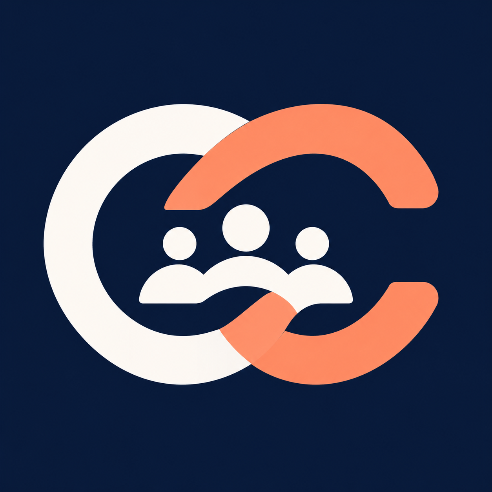

Customer onboarding demo
From kickoff to handover
Ordo et Cura is a fictional platform that helps B2B teams and their customers coordinate onboarding tasks, responsibilities, and approvals in one shared project.
Explore demo workspace
Support examples
Onboarding questions
Open a question to see how support might help in a typical onboarding scenario.
What should I do if my invitation has expired?
Invitation links expire after seven days. Ask your workspace administrator to resend the invitation, then use the link in the newest email.
Why can't I see my project after signing in?
Customer collaborators can only see projects explicitly shared with them. Ask your workspace administrator to check that the project was shared with the email address you used to sign in.
Why is training blocked after the configuration task is done?
Check the training task's prerequisites and whether configuration still needs approval. If approval is pending, follow up with the assigned approver.